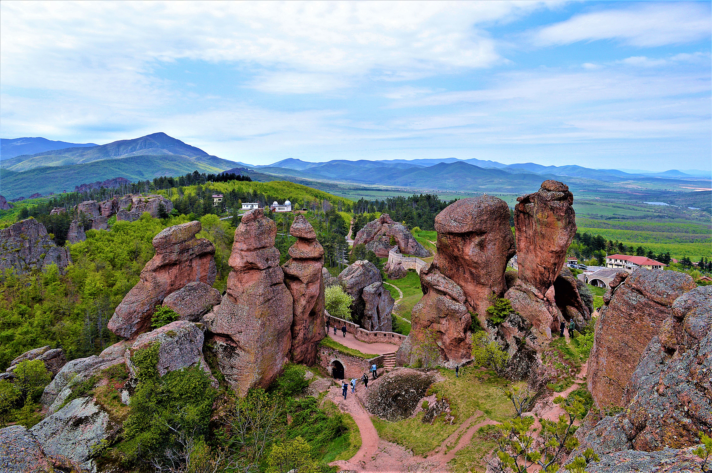
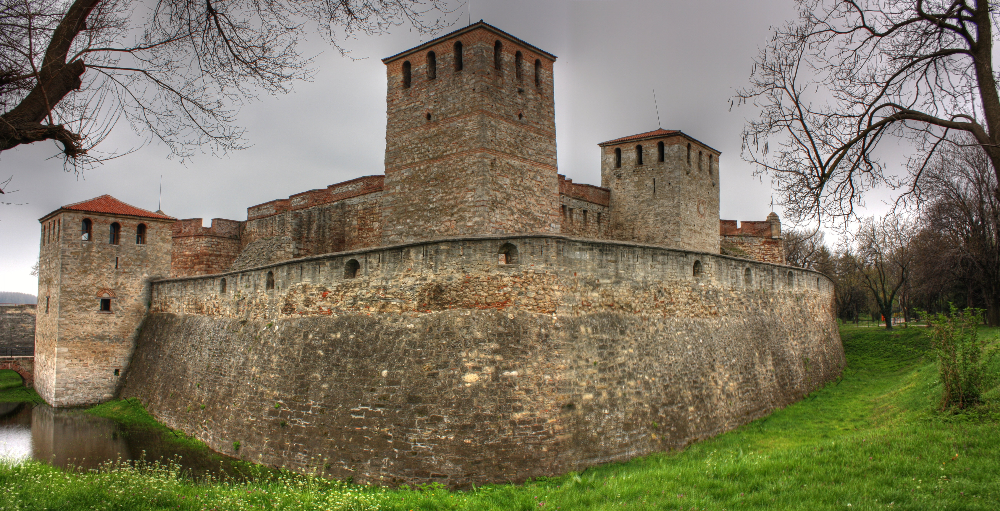
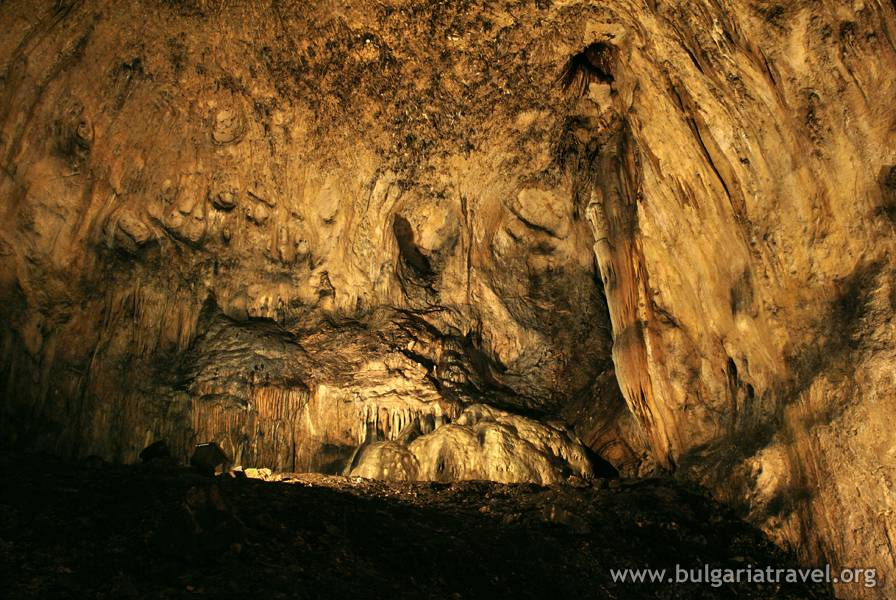
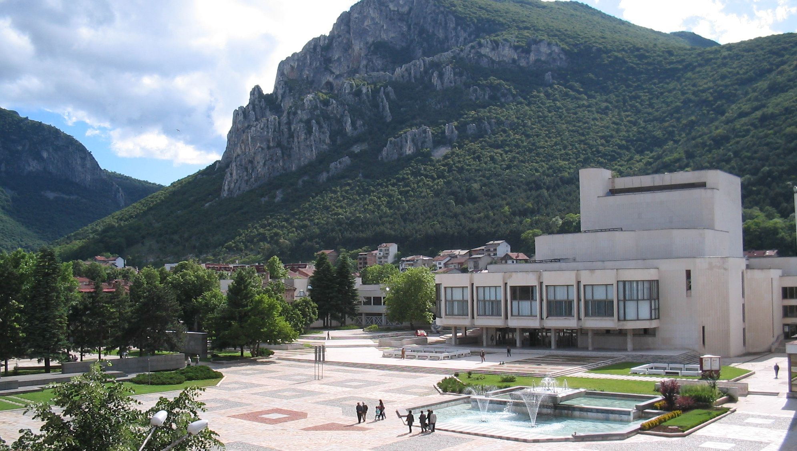

Добре дошли в един от най-автентичните и завладяващи райони на България. Северозападът е място, където времето сякаш е спряло, за да съхрани величествена природа, хилядолетна история и живи традиции. От дълбоки прохладни пещери до непристъпни крепости – тук всяка крачка е пътешествие през епохите.

Разположени на площ от 30 кв. км, тези спиращи дъха червени скални кули са извайвани от природата над 200 милиона години. Те крият в себе си древни легенди за невъзможна любов и са дом на мистичната Белоградчишка крепост.

Единствената напълно запазена средновековна крепост в България. Построена върху останките на античния римски град Бонония, тя впечатлява със своите масивни каменни стени и отбранителни кули по брега на река Дунав.

Галерия на праисторията с уникални скални рисунки на над 7000 години. В нейните огромни зали се съхранява древен слънчев календар, а специфичният микроклимат я прави перфектно място за отлежаване на специални вина.

Дом на прохода Вратцата, където се издигат най-високите отвесни скали на Балканския полуостров. Мястото е същински рай за алпинистите и любителите на природата, предлагащо сурова, неподправена планинска красота.